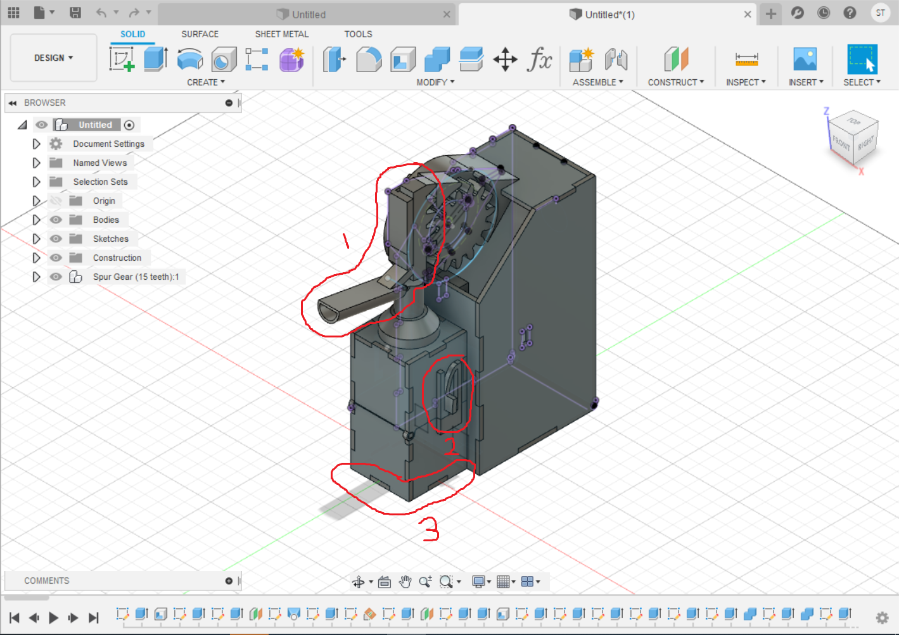

Final Project
BOM
Automatic hand sanitier Dispenser
Design Phase
Due to the current COVID 19 pandemic, I thought it will be a great idea to create a automated hand sanitizer dispenser. I decided to look at other DIY hand sanitizer dispensers and realised that most designs were bulky and had a lot of exposed wiring. I now had two goals to try to complete. I also wanted the bottle to be easily replaced and have the electronics easily accesible to be maintained and modified. Thus these were my final goals.
- Make the design as compact as possible.
- Reduce the amount of exposed electronics as possible.
- Allow for replacement of empty bottles.
- Easily accesible electronics bay.
Another thing I took away from most of the DIY designs out there is that there were 2 main methods of dispensing, either they used mechanical means(typically pulley) to operate a manual pressing pump or bypassing the existing pump and using a electronically controlled water pump. I decided to try to have the machine work the manual pump instead eventhough the latter will lead to a more compact design as I was worried about the liquid wastage from the pump not reaching all the way to the bottom of the bottle. Also most designs using the pump requires modifications to the bottle and/or the cap which will not make it easy to replace bottles when they are empty. So at the end of the day, I tried to design something that already made use of existing mechanisms of the bottle, like its pumps and the screw threads to attach the cap to the bottle, to make my product. I then went on to the concept phase, drawing different designs to see which will be the most practical.
For my first design, I decided to make use of the pulley mechanism to compress the pump. I also designed it in such a way where the electronics are seperated from the bottle in the case of leaks. A big factor of this design is that the bottle is inverted. This was done so that I could dispence the hand sanitizer liquid from the bottom as if I did it from the top, I am not sure that the hand sanitiser will reach far enough to dispense on the hand properly taking into account the casing I built for it. The pros of this design is that the whole pulley mechanism doesn't really get in the way, it is not too big and wound make the whole design much more compact. However I decided to scrap using the pulley idea as I feared that the pulley would not provide the nescessary force needed to compress the spring in the pump.
For my second design, I made use of the same design but swapped out the pulley with a rack and pinion mechanism. This would alleviate the concerns of there being not enough compressive force. However after designing this, Mr Chew pointed out that the fact that the bottle was inverted might introduce problems that the soap bottle was not designed for. I did a test of using a typical bottle and inverting it and noticed that it leaks quite substantially. Though both my designs ensured that any leaks would be contained away from the electronics, I felt that it was unsafe and decided to redesign again.
For my third design I incorporated the upright nature for the bottle as advised by Mr Chew and designed my box to be able to laser cut. This new design was built to be minimalist with attention to the allowing the bottle to be detached and refilled for extended use. It kept some of the old features such as a seperate electronics housing, the rack and pinion, but got bulkier than what I had intended it to be. After showing this to Mr Chew, he felt that pumping might be an issue as there is no base to support the pumping action (as it was only held by the acrylic in contact with the neck of the bottle). In the end I decided to redesign it again.
For my final design, I have incorporated the best out of all my previous designs, the door that opens up to allow the bottle to be interchanged, the seperate electronics box as well as some of Mr Chew's suggestion such as to make the bottle upright and include a base. This general idea would form the basis of my final product. The link below is a downloadable Fusion file of my final design.
Final ProjectAs you can see, my final design looks vastly different from the concept but yet still retained the elements key in forming my concept. A few points I would like to note about my final product
- I realised after looking at the bottle that the liquid ejected by the nozzle might not reach the users palm so I decided to create a nozzle extention and conbine it with the rack so that i can print it as one whole piece.
- The next thing to note that is different from the concept is the lock. The concept lock uses a hinge system to detatch but I felt that a hinge of that small size was unfeasable so i decided to with a more conventional buckle design.
- This is the base that Mr Chew suggested that I add. the entire bottom half can open outward to swap bottles which is something I kept relatively similar to the concept.
- These are holes at the base plate that were designed to fit the arduino upload port perfectly. This was done so that the arduino board doesn't have to be removed from the casing to be reprogrammed
- This back door was a relatively last minute addition to allow for easy maintainence of the electronics. I hadn't really considered that when making the concept but realised its importance midway in the design phase.
I had 3D printed the motor housing, the spur gears, the rack nozzle,and some parts of the locks while the rest were lasercut as shown below.
Arduino
For the arduino portion, I would be using a IR sensor as my input and the SM-S3317B servo motor as my output. I used a simple if else statement such that if the IR sensor detects and obstacle, it will enable the motor to rotate 50 degreesin both directions.
This "Circuit Diagram" of sorts shows the way my components will be connected. I decided that instead of connecting my motor to the arduino (max 5V output) I would connect it directly to the 6V battery pack. The motor can accept voltage from 4.8V-6V but 6V provides more torque so i tried to maximise it.
Project Code.Takeaways from this project
The biggest takeaway from this project is that when conceptualising, it is important to spend the extra time thinking ahead and planning each step. If I had taken the time to think out the steps of my project, I would not be doing so much of my stuff at the last minute. Another thing I felt that I should have done more is to do more individual testing of components and ideas. I should have tested my original motor to see if it was strong enough to push the nozzle before designing and printing a housing for it. I should have also tested the stiffness of the pump and considered other types of bottles before setting my project around it. Doing all of this would have saved me a lot of time, stress and hassle of constantly remodelling my design, coming to school to make modifications, reprinting etc. Though I had invested too much time into this project and had felt the sense of hopelessness along the way, I do not regret it as I felt like I have learnt key lessons and habits that good engineers should always keep in mind that I can only get through experience.